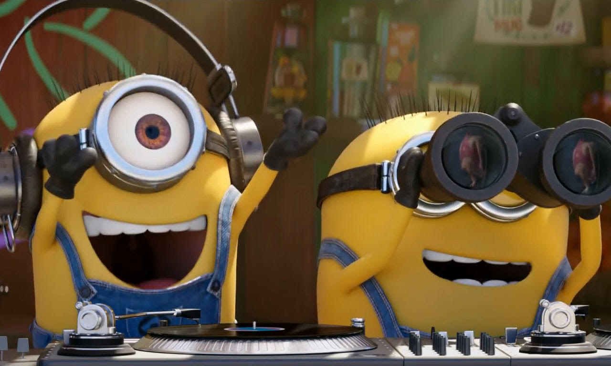
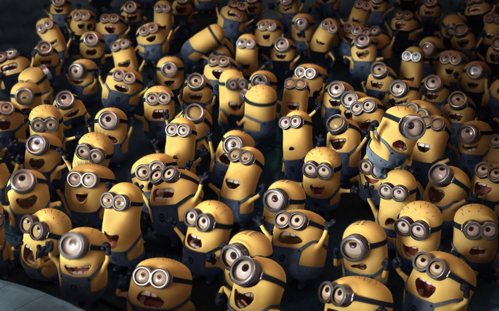
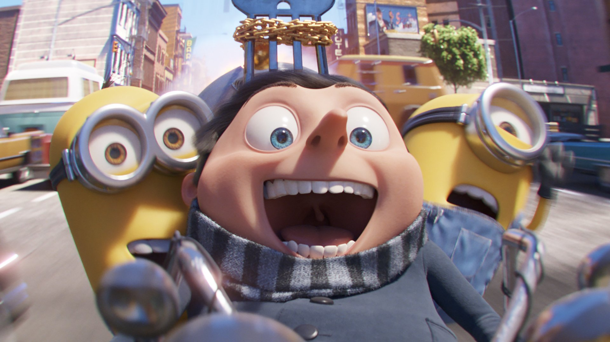
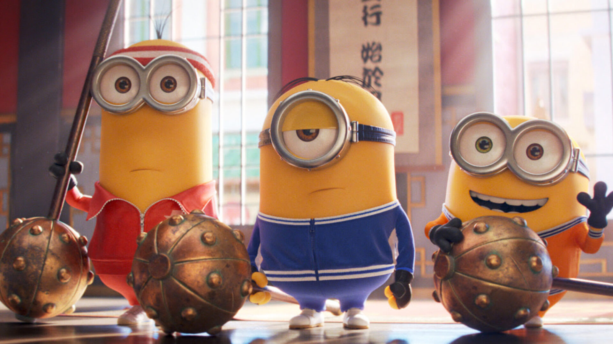
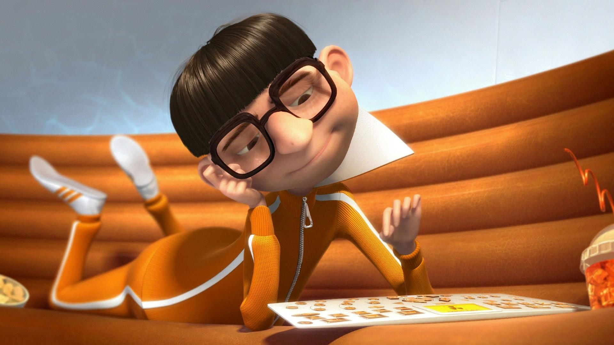
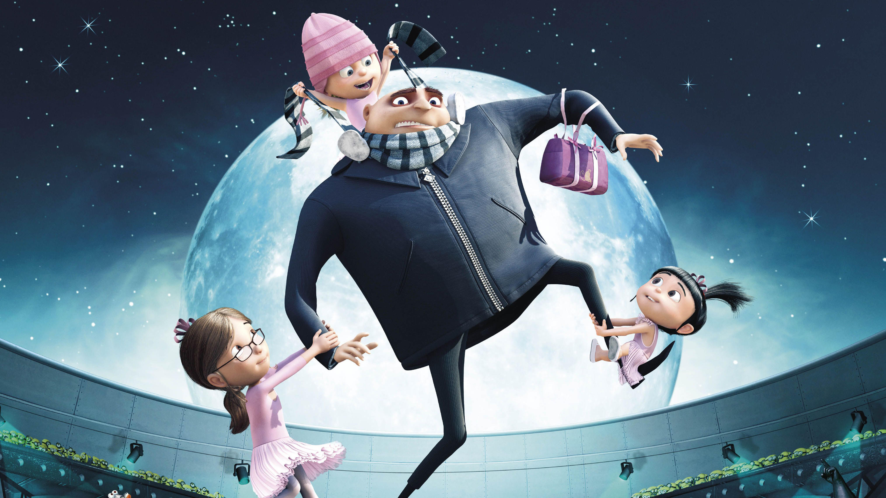

About Us
Installments
Home
Characters
Merchandise
1 / 6

2 / 6

3 / 6

4 / 6

5 / 6

6 / 6

Despicable Me 1
Despicable Me 2
Despicable Me 3
Longtime supervillain Gru has his pride hurt when an unknown rival steals the Great Pyramid of Giza. Gru, his elderly assistant Dr. Nefario, and his army of Minions formulate a plan to steal the Moon. Dr. Nefario worries that the plan will be too expensive, so Gru applies for a loan from Mr. Perkins, the director of the Bank of Evil, who orders Gru to steal a shrink ray first. While at the bank, Gru meets Vector, the budding supervillain who stole the Pyramid. Gru and two of his Minions obtain the shrink ray from a research base, only for Vector to intercept them and steal it for himself.
After a series of failed attempts to steal back the shrink ray from Vector's fortress, Gru notices three orphan girls, Margo, Edith, and Agnes, being allowed into the fortress to sell cookies to Vector. Gru disguises himself as a dentist and adopts the girls; he later uses them to distract Vector long enough for him to steal back the shrink ray. He intends to abandon the girls at an amusement park, but then starts to bond with them. Gru later shows Mr. Perkins the shrink ray via video call, with some interruptions from the girls. However, Perkins refuses the loan and claims Gru is not of any use to him.
A heartbroken Gru tells the Minions that the bank ceased funding the project. The girls give him their piggy bank, and the Minions pool all of their resources to raise the funds needed for the project. Meanwhile, Perkins berates Vector, who is revealed to be his son, for letting Gru steal back the shrink ray.
Dr. Nefario calculates the day when the Moon is closest to Earth, but it is the same day as the girls' ballet recital. Believing the girls are too much of a distraction to Gru, Dr. Nefario calls the orphanage's owner Miss Hattie to take the girls back. Gru successfully shrinks and steals the Moon. Hoping to make it to the recital on time, Gru rushes back to Earth, but finds that the recital has already ended and that Vector has kidnapped the girls.
Arriving at Vector's fortress, Gru surrenders the Moon to Vector, but Vector refuses to give back the girls. Enraged, Gru storms Vector's fortress, intent on revenge. Vector panics and activates his escape aircraft. Meanwhile, Dr. Nefario and the Minions discover that the shrink ray's effects are temporary; the bigger an object, the faster it reverts to its regular size. Gru, Dr. Nefario, and the Minions rescue the girls before the Moon returns to its normal size and launches itself into orbit, with Vector stranded on it. Gru reclaims custody of the girls, and they celebrate with a special ballet recital that becomes a dance party.
A mysterious aircraft steals a highly potent mutagen known as PX-41 from a secret laboratory in the Arctic Circle. Silas Ramsbottom, director of the Anti-Villain League (AVL), sends agent Lucy Wilde to recruit former supervillain Gru. Gru is forcibly brought to the headquarters and asked by Ramsbottom to help them track down the culprit and recover the mutagen. However, Gru refuses, claiming that he is now a legitimate father and owner of a jelly-producing business. Later, Dr. Nefario, Gru's friend and assistant, quits to accept a more villainous job offer; this causes a reluctant Gru to decide to work with the AVL after all. He and Lucy are stationed at the Paradise Shopping Mall, with a cupcake store as their front.
Gru immediately suspects that Mexican restaurant owner Eduardo Pérez might be "El Macho", a supervillain who supposedly died by riding a shark into an active volcano with 250 pounds of TNT strapped to his chest. Gru and Lucy break into Eduardo's restaurant at night but find no evidence. Meanwhile, Gru's three adopted daughters, Margo, Edith, and Agnes, who dream of having a mother one day, believe that Gru will fall in love with Lucy. Gru denies it, saying his relationship with Lucy is only professional.
Despite holding Eduardo as his prime suspect, Gru agrees to pursue other leads, including the shop of wig merchant Floyd Eaglesan, where Lucy discovers traces of PX-41. After witnessing Eduardo's son Antonio woo Margo and invite everyone to his Cinco de Mayo party, Gru renews his focus on Eduardo. After Lucy helps Gru escape a blind date gone wrong, she and Gru begin to bond. The next day, the AVL arrests Floyd after finding an almost-empty jar of the mutagen in his shop. Silas closes the investigation and reassigns Lucy to Australia, leaving Gru heartbroken.
At the Cinco de Mayo party, Gru follows Eduardo and discovers that he is indeed El Macho. Having faked his death, El Macho has hired Dr. Nefario, and had abducted most of Gru's Minions, using the stolen PX-41 mutagen to transform them into an army of indestructible and savage purple beasts. El Macho plans to launch rockets full of the evil Minions into major cities to dominate the world. He offers Gru the chance to team up with him, but Gru walks away with the girls. Suspicious, El Macho sends an evil Minion, Kevin, after them.
Lucy, having decided to disobey orders and return home to Gru, arrives at the party right after Gru leaves. Realizing that Lucy and Gru are working for the AVL, El Macho kidnaps her. Dr. Nefario witnesses this and informs Gru of the situation. Gru infiltrates El Macho's fortress with two of his own disguised Minions, but the evil Minions see through the disguise and attack them. Meanwhile, Kevin breaks into Gru's house and attacks Margo and Agnes. They lure him to Gru's lab, where Dr. Nefario arrives with an antidote and turns Kevin normal again. Dr. Nefario puts the antidote in Gru's jelly reserves, and he and the girls hurry to Gru's aid. Gru, Dr. Nefario, the girls, and the surviving Minions use jelly guns to restore all the other evil Minions to their normal state. El Macho threatens to kill Lucy, and uses the PX-41 to become a monster himself, but is defeated by Gru and Dr. Nefario.
Gru starts to rescue Lucy from El Macho's TNT-loaded shark rocket, but El Macho's pet chicken Pollito launches it, sending them toward a volcano. Lucy accepts Gru's invitation for a date, and they jump into the ocean before the rocket explodes in the volcano. One hundred and forty-seven dates later, Gru and Lucy get married, giving Margo, Edith, and Agnes a mother. As everyone prepares to take a picture together, an evil minion appears.
Married Anti-Villain League (AVL) agents Gru and Lucy are sent to recover the stolen Dumont Diamond from Balthazar Bratt, a former child star who became a supervillain after his show, Evil Bratt, was canceled. Gru recovers the diamond, but Bratt escapes. At the AVL headquarters, director Silas Ramsbottom announces his retirement, and appoints board member Valerie Da Vinci as the new director. Da Vinci dismisses Gru and Lucy from the AVL, believing they should have captured Bratt during the mission.
When Gru and Lucy return home, they tell their adopted daughters Margo, Edith, and Agnes of their dismissal, but assure them they will soon have new jobs. When Gru refuses to return to being a supervillain, and his assistant Dr. Nefario is frozen in carbonite,[a] most of his Minions, led by Mel, abandon him to find new jobs. They eventually land in jail after accidentally crashing into a television studio.
A butler named Fritz arrives at Gru's home with an invitation from Gru's long-lost twin Dru, who lives in a distant country named Freedonia. The family travels to meet Dru, and are surprised by his immense wealth and mansion. Meanwhile, Bratt steals the diamond again, intending to use it to power a giant robot that will destroy Hollywood, as revenge for his show's cancelation. Dru reveals to Gru that their deceased father was a supervillain known as "the Bald Terror", whose villainous activities and technological advances are the real source of the family's wealth. Dru wants Gru to teach him how to become a villain, but Gru refuses to revert to his old ways. While Lucy struggles with her new tasks as a mother, Dru and Gru become closer after joyriding in their father's high-tech vehicle.
Gru and Dru decide to steal the diamond; however, Gru secretly intends to bring it to the AVL to convince Da Vinci to rehire him and Lucy. They narrowly escape with the diamond and are rescued by Lucy. Dru, finding out Gru's true motives, is upset that Gru lied about teaching him how to be a villain. In return, Gru berates Dru for his incompetence, disowns him, and decides to leave Freedonia.
Bratt, disguised as Lucy, kidnaps the girls, and once again acquires the diamond. Discovering this, Gru and Dru put aside their differences; the brothers and Lucy set off after Bratt in the Bald Terror's vehicle. With his robot's laser powered by the diamond, Bratt terrorizes Hollywood, covering it in superpowered bubble gum in hopes of lifting the city into outer space. Lucy rescues the girls from a falling skyscraper as Bratt sends Gru and Dru crash-landing into the streets of Hollywood. Bratt tries to kill Gru with the robot's laser, but Dru risks his life to break into the robot and power it down from the inside. Gru engages Bratt in a dance fight before stealing his weaponized keytar to defeat him. The Minions, having escaped jail to reunite with Gru, pop the bubble gum bubbles covering the city. Dru and Gru reconcile, and share an embrace with Lucy, Margo, Edith and Agnes.
Gru and Lucy are reinstated into the AVL. The newly united family celebrates in Gru's home, and Lucy bonds with the girls and acknowledges them as her daughters. Still wishing to be a supervillain, Dru, along with most of the Minions, steals Gru's rocket-powered aircraft and flies away. Gru and Lucy decide to give them a five-minute head-start before engaging in pursuit.